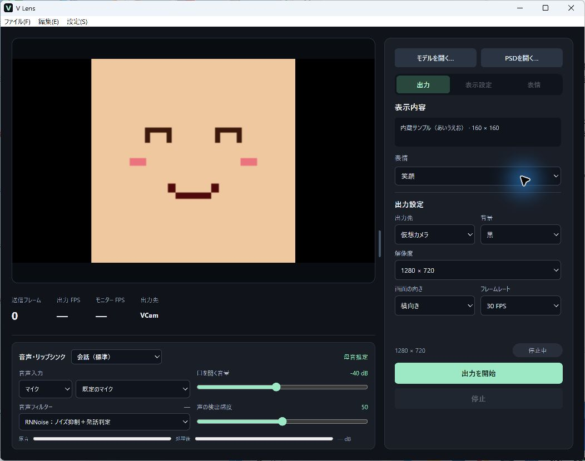
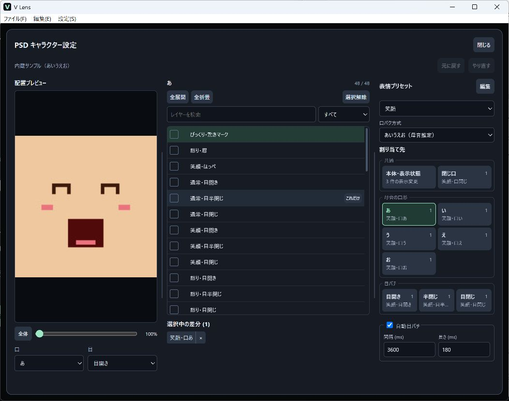

音声から口パク
マイクやデスクトップ音声を使用できます。RNNoiseや発話判定、会話や歌に合わせたプリセットがあります。
Windows 11（x64）対応
はじめてのVTuber配信に。
PSD・VRM対応の仮想カメラ
立ち絵や3Dアバターを読み込み、マイクで口パク、Webカメラで顔トラッキング。アバターの映像をOBSや通話アプリに映せます。
ダウンロード

PSDの目や口の差分を割り当てます。口形は3段階または「あいうえお」に対応し、表情はショートカットで切り替えられます。
VRM 0.x／1.0に対応。カメラで顔の向き、まばたき、視線を読み取り、モデルに反映します。GLB・FBXも読み込めます。
マイクやデスクトップ音声を使用できます。RNNoiseや発話判定、会話や歌に合わせたプリセットがあります。
仮想カメラ「VCam」では出力中に背景色を切り替えられます。OBSで半透明を保って合成する場合はSpout2を選びます。
追跡用カメラの確認画面にはモザイク映像やランドマークを表示します。アプリ画面に未加工のカメラ映像は表示しません。
バーチャルYouTuber（Virtual YouTuber）を始めたい方は、まず内蔵サンプルをマイクで動かしてみてください。
PSDや3Dモデル、画像、動画を選びます。サンプルは「ファイル」メニューから開けます。
口パクの入力元を選びます。顔の動きを使う場合はカメラトラッキングを設定します。
受信側で「VCam」を選びます。Spout2の場合はOBSの「Spout2 Capture」で「V Lens」を選びます。
Windows 11（x64）向けです。仮想カメラの登録には管理者権限が必要です。
内蔵PSDサンプルで、口パク・目パチ・表情の切り替えを試せます。自分のアバターを使う場合は、レイヤー付きのPSDや対応する3Dモデルを読み込みます。
音声による口パクと自動目パチ、画像・動画の出力はカメラなしで使えます。顔や視線のトラッキングにはカメラが必要です。
表情や身体の動きは、モデルに用意されたボーンとモーフによって異なります。全身トラッキングは試験機能です。
出力は映像のみです。配信する音声はOBSや通話アプリ側で設定してください。
V Lens 0.1.39 · Windows 11（x64）用 NSIS インストーラー
インストーラーは未署名です。Windows のセキュリティ機能により、起動時に警告が出る場合があります。
公式サイトから取得したファイルか確認してください。リリースノートに掲載している SHA-256 と照合できます。会社や学校の端末では、設定を変更する前に管理者へ確認してください。
「Windows によって PC が保護されました」と表示された場合は、「詳細情報」を開きます。「実行」が表示されていれば、そのインストーラーだけ実行できます。
保護設定を変更する場合は、Windows セキュリティの「アプリとブラウザー コントロール」→「評価ベースの保護設定」→「アプリとファイルの確認」で一時的にオフにできます。インストール後はオンに戻してください。
スマート アプリ コントロールがブロックした場合、アプリごとの例外は設定できません。オフにする場合は、Windows セキュリティの「アプリとブラウザー コントロール」→「スマート アプリ コントロールの設定」で「オフ」を選びます。
オフにすると、PC 全体でこの機能による保護が無効になります。最近の Windows 更新が適用されていれば設定からオンに戻せます。Windows の更新状況や構成によっては、再有効化に PC のリセットや Windows の再インストールが必要です。